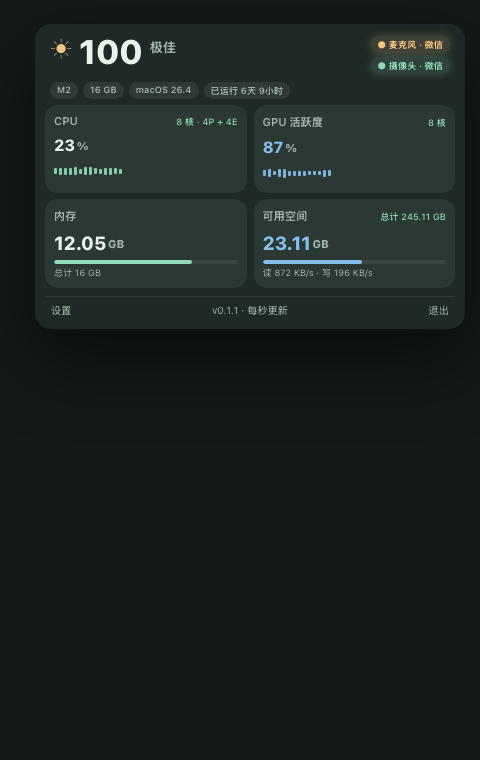
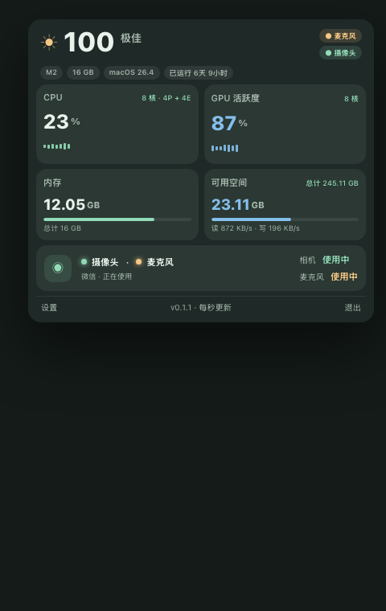
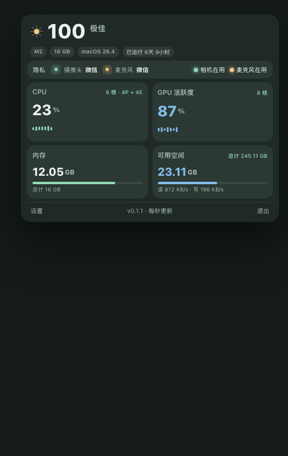

方向一 · 标题指示灯
最小改动 · 一眼开关在两颗指示灯徽标嵌入标题行「麦克风 · 微信」橙、「摄像头 · 微信」绿。占用时点亮，空闲时变灰。不占卡片空间，零学习成本。

方向二 · 独立隐私卡片
信息完整 · 一块区域在内存/可用空间下方加一块「隐私」卡，左右分相机/麦克风状态 + 占用进程。信息密度最高，占用一块整卡。

方向三 · 顶部隐私状态条
常驻条 · 横贯整行在 CPU 卡上方加一条整行「隐私」条：摄像头/麦克风各带进程 + 左右两颗绿/橙状态灯。横贯面板，最醒目也最占空间。